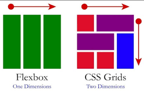
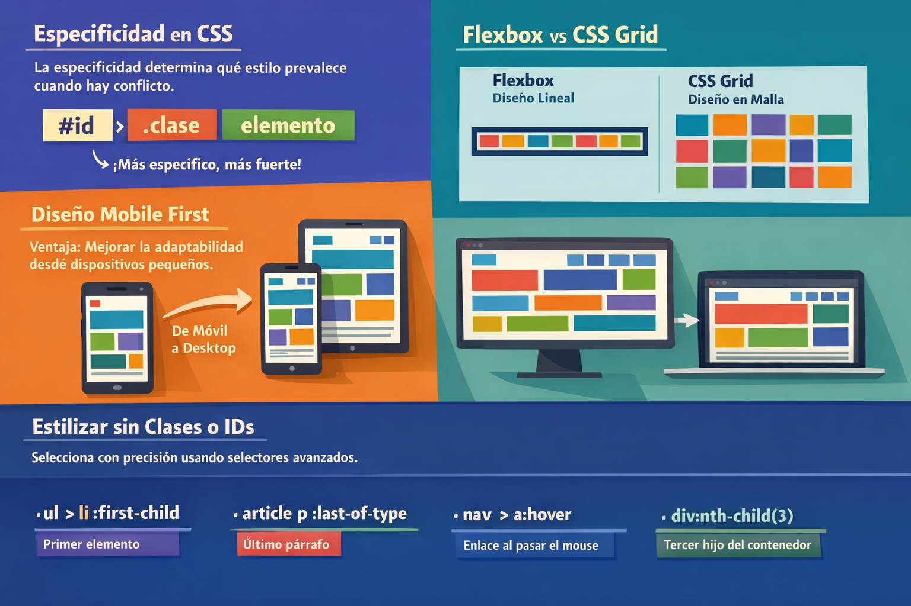
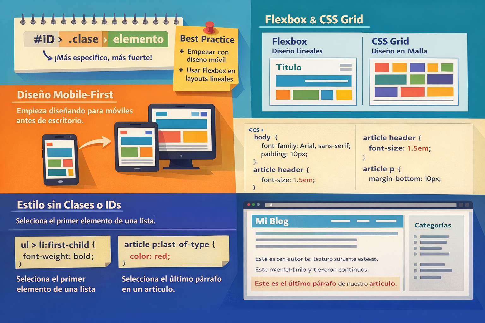

Blog de Jesika Pachon
Preguntas orientadoras
¿Cuál es el rol de la especificidad en la resolución de conflictos de estilos CSS?
La especificidad en CSS es el método que determina qué estilos se aplican a un elemento cuando existen múltiples reglas con selectores diferentes. Es fundamental para organizar el código y evitar conflictos entre estilos. Durante el ejercicio, comprendí que los selectores más específicos tienen mayor prioridad sobre los generales, lo que facilita la gestión del diseño en una página web.
¿Qué tipo de layout es más apropiado para Flexbox y cuál para CSS Grid?
Flexbox es ideal para layouts unidimensionales, como barras de navegación o listas de elementos que necesitan distribución flexible del espacio. CSS Grid es más adecuado para layouts bidimensionales, como la estructura general de una página con filas y columnas.
¿Por qué es ventajoso empezar el desarrollo de un sitio web con el diseño para móviles?
Empezar el desarrollo de un sitio web con el diseño para móviles es ventajoso porque permite priorizar el contenido esencial y asegurar una experiencia óptima en los dispositivos más utilizados.
¿Cómo se pueden seleccionar y estilizar elementos de forma precisa sin usar clases o IDs en el HTML?
Se pueden seleccionar y estilizar elementos de forma precisa sin usar clases o IDs en el HTML mediante el uso de selectores avanzados, como pseudo-clases y pseudo-elementos.
- Pseudo-clase :hover: cambia el estilo cuando el usuario pasa el cursor sobre un elemento.
- Pseudo-elemento ::before: permite agregar contenido visual antes de un elemento.
Galería de imágenes


